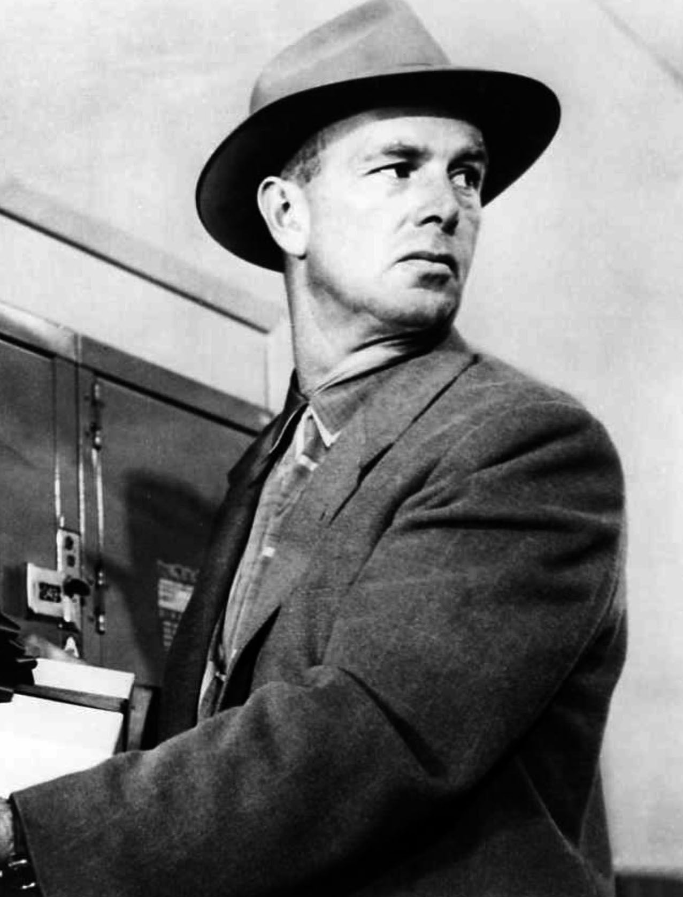

Atraco perfecto
The Killing (en España, Atraco perfecto; en Hispanoamérica, Casta de malditos) es una película estadounidense de 1956 dirigida por Stanley Kubrick y con Sterling Hayden en el papel principal. Está basada en la novela de 1955 Clean Break, escrita por Lionel White y reeditada después con el mismo título de la película.
La película The Killing, tercer trabajo de Kubrick como director, narra un robo meticulosamente planeado que desemboca en una masacre. El plan comienza a tambalearse cuando Sherry Peatty, la mujer de uno de los ladrones, manipula a su marido para que le revele los detalles del atraco y seduce a su amante para que le robe el botín a Johnny, el cerebro del plan.
Cinco años en prisión dan para muchas ideas. Este es el tiempo que ha necesitado Johnny Clay (Sterling Hayden) para urdir el golpe perfecto. Un atraco minuciosamente preparado a un hipódromo, del que podría sacar la sustanciosa cantidad de dos millones de dólares. Tras salir de la cárcel se buscará un grupo de fiar. Cinco hombres. Nada de delincuentes habituales. Gente corriente, con empleos mal remunerados y con ganas de cambiar su estilo de vida radicalmente. Perdedores natos que se dejen embaucar, a la mínima de cambio, por sus deslumbrantes planes. Especialmente sabiendo que el plan es hacerse con dos millones de dólares en un robo en las oficinas del hipódromo en el cual "nadie sufrirá daño", en la operación le acompañan Randy Kennan (Ted de Corsia), un policía corrupto; Mike O'Reilly (Joe Sawyer), un hombre que necesita imperiosamente el dinero para su esposa enferma; y George Peatty (Elisha Cook Jr.), un tipo poco consistente que ve por todos lados pretendientes de su atractiva mujer Sherry (Marie Windsor). Poco después, al grupo se unirá Nikki Arane (Timothy Carey), un asesino profesional que deberá disparar en el hipódromo a Relámpago Rojo, un famoso caballo que participará en la séptima carrera.
Será el momento, gracias a la confusión creada, que aprovechará la banda para desvalijar la caja fuerte donde están los dos millones de dólares. El plan se ejecuta a la perfección, pero Nikki muere a consecuencia de los disparos de un vigilante del aparcadero, y a pesar de toda su previsión, Clay y sus hombres han descuidado una cosa: Sherry Peatty, una mujer hambrienta de dinero y traicionera, que planea dar su propio golpe financiero. El resto de la banda, una vez dado el golpe, se pelea por el dinero y nadie puede retenerlo. Johnny y su novia Fay (Coleen Gray) se encuentran con todo el botín en el aeropuerto rumbo a Boston. Pero todo atraco perfecto tiene alguna imperfección imprevisible.
1968